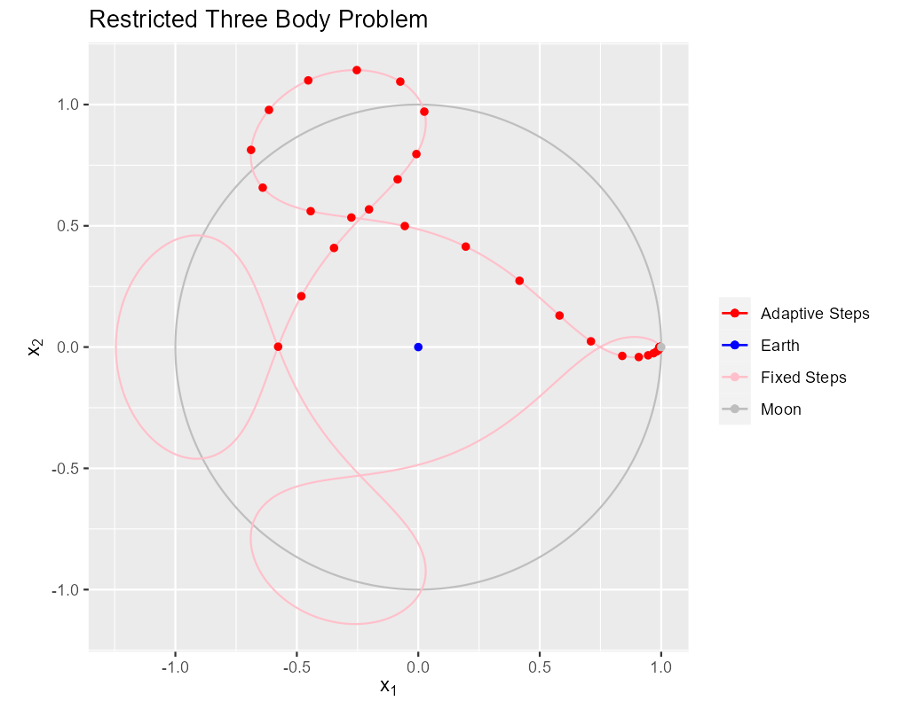
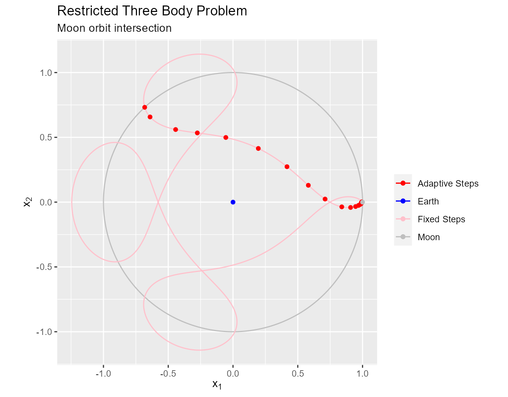

MRKISS Library Example
The Three Body Problem
| Author: | Mitch Richling |
| Updated: | 2025-08-10 13:43:26 |
| Generated: | 2025-08-10 13:43:28 |
Copyright © 2025 Mitch Richling. All rights reserved.
Table of Contents
1. Introduction
This is one of my favorite IVP example problems.
This is a dimensionless, restricted three gravitational body problem. The Earth is stationary at the origin. The Moon orbits the Earth at a radius of \(1\) and is at \((1,0)\) at \(t=0\). The mass ratio is \(\frac{100}{8145}\). The position, \((x_1,x_2)\), and velocity, \((v_1,v_2)\), are governed by the following differential equation:
\[\begin{align*} \frac{\mathrm{d}v_1}{\mathrm{d}t} & = v_1 \\ \frac{\mathrm{d}v_2}{\mathrm{d}t} & = v_2 \\ \frac{\mathrm{d}x_1}{\mathrm{d}t} & = 2 v_2 + x_1 - \frac{\mu (x_1 + \mu -1)}{D_1} - \frac{(1 - \mu) (x_1 + \mu)}{D_2} \\ \frac{\mathrm{d}x_2}{\mathrm{d}t} & = -2 v_1 + x_2 - \frac{\mu x_2}{D_1} - \frac{(1 - \mu) x_2}{D_2} \end{align*}\]
Where \(D_1\) and \(D_2\) are defined as:
\[\begin{align*} D_1 & = \sqrt{\left(x_2^2 + (x_1 + \mu - 1)^2\right)^3} \\ D_2 & = \sqrt{\left(x_2^2 + (x_1 + \mu)\right)^3} \end{align*}\]
We solve the equations with the following initial values:
\[\begin{align*} (x_1,x_2) &= \left(\frac{497}{500}, 0\right) \\ (v_1,v_2) & = (0, -2.0015851063790825224) \end{align*}\]
Under these conditions the satellite will return to it's initial position after completing a three lobed orbit at \(t=17.06521656015796\).
The code for this example is found in ~examples/three_body.f90. Additionally the code may be found at the end of this document in the section Full Code Listing.
This example makes several MRKISS high level solver calls each illustrating a different feature or technique. In
the sections that follow we examine each of those calls in detail.
2. Classical Solution
In this section we produce the classical image of the solution.

The solid pink curve is generated from 4000 points on the orbit generated with a fixed step size solver. This is quite expensive computationally taking about 16 milliseconds on my computer. Still, it produces a very nice curve.
! BEGIN: steps_fixed_stab call steps_fixed_stab(status, istats1, sol1, eq, t_iv, y_iv, param, a, b1, c, t_end_o=t_end) print '(a)', status_to_message(status) call print_istats(status, istats1, idxs_to_prt_o=[1, 2]) call print_solution(status, sol1, filename_o="tree_body_steps_fixed_stab.csv", end_o=istats1(1)) ! END: steps_fixed_stab
The red dots on the solid pink curve are solution points generated using a classical, adaptive Runge-Kutta scheme.
The algorithms involved in the adaptive solution are far more complex than in the fixed step solution above. Yet the solver calls in these two code snippets are remarkably similar. IMO, the real value in an adaptive solver is the reduction in computational needs by making the step sizes as large as possible without sacrificing accuracy. As you can see the step size is much smaller near the singularities. The fixed run above takes 16 milliseconds while the adaptive run takes less than one millisecond.
More sophisticated libraries offer the ability to interpolate between solution points at pretty low cost while maintaining the accuracy of the overall method. For generative art and visualization we can use Hermite interpolation at an even lower cost. Normally interpolation is achieved outside the ODE solver and directly inside a visualization software platform – we simply provide the points and derivatives.
Notice in the snippet above we only report istats(1) and istats(2) because these are the only two values in istats updated by steps_fixed_stab().
In the code below we add istats(4) because steps_adapt_etab() updates this value.
! BEGIN: steps_adapt_etab-std call steps_adapt_etab(status, istats1, sol1, eq, t_iv, y_iv, param, a, b1, b2, c, p1, p2, & t_delta_max_o=t_delta*100, t_delta_ini_o=t_delta*20, error_tol_abs_o=[1.0e-9_rk], & error_tol_rel_o=[1.0e-6_rk], t_max_o=t_end, t_end_o=t_end); print '(a)', status_to_message(status) call print_istats(status, istats1, idxs_to_prt_o=[1, 2, 4]) call print_solution(status, sol1, filename_o="three_body_steps_adapt_etab-std.csv", end_o=istats1(1)) ! END: steps_adapt_etab-std
3. Interpolation
Most visualization tools directly support Hermite spline interpolation between points, and will happily use use the derivative information in the solution to connect the widely separated red dots in the adaptive solution with smooth curves. So it is rare that we wish to do interpolation simply to connect dots. More common is the need to "line up" two solutions on the same \(t\) values for some other reason. The most common use case is Hermite interpolation:
{kind=link}
The data for the images above was produced by this code:
! BEGIN: steps_adapt_int_hermite call seq(status, sol2(1,:), from_o=0.0_rk, to_o=t_end); ! Create new t values print '(a)', status_to_message(status) call interpolate_solution(status, istats2, sol2, sol1, eq, param, num_src_pts_o=istats1(1)) ! Preform the interpolation call print_solution(status, sol2, filename_o="three_body_steps_adapt_std_interpolated.csv") ! END: steps_adapt_int_hermite
Less common is linear interpolation:
{kind=link}
The data for the images above was produced by this code:
! BEGIN: steps_adapt_int_linear call seq(status, sol2(1,:), from_o=0.0_rk, to_o=t_end); call interpolate_solution(status, istats2, sol2, sol1, eq, param, num_src_pts_o=istats1(1), linear_interp_o=.true.) print '(a)', status_to_message(status) call print_solution(status, sol2, filename_o="three_body_steps_adapt_std_interpolated_lin.csv") ! END: steps_adapt_int_linear
Note that Hermite interpolation provides an O(3) solution to the IVP. So both are inappropriate if high accuracy solutions are required. Here we can see the errors:

The code for the above images:
4. Fixed Steps & Method Order
The pink curve in our first image was the result of 4000 fixed steps with a 9th order Runge-Kutta method. Why did we pick a 9th order solver? Because it allowed us to use a step size small enough to be ascetically pleasing but large enough to not produce too many points for our simple plotting program.
From the perspective of generative art and visualization, fixed time step solutions are important because they preserve "time" in animations. We can achieve fixed steps via interpolation; however, it is frequently more convenient to simply use a fixed step size solver. Method order for generative art and visualization is often thought of as a tool to allow for ascetic step sizes instead of a way to achieve a solution accuracy requirement.
In the following image we see the unsatisfactory result of using a 5th order solver with the same step size:
{kind=link}
The code for the above solution is identical except for a change in Runge-Kutta method arguments:
! BEGIN: steps_fixed_stab-dp call steps_fixed_stab(status, istats1, sol1, eq, t_iv, y_iv, param, dpa, dpb, dpc, t_end_o=t_end) print '(a)', status_to_message(status) call print_istats(status, istats1, idxs_to_prt_o=[1, 2]) call print_solution(status, sol1, filename_o="steps_fixed_stab-dp.csv", end_o=istats1(1)) ! END: steps_fixed_stab-dp
5. Adaptive Solution With More Steps For A Nice Plot

If we wanted more points in the adaptive solution we could use t_delta_max_o. This will get us more points, but it's not necessarily what we want for a
nice graph. What we really want for a nice graph is a fixed maximum distance between plotted points which a fixed \(\Delta{t}\) will not necessarily deliver.
That said we still want the adaptive algorithm to produce points closer together when accuracy requires it. One way to achieve that is with the step
processing capability of steps_adapt_etab() via the stepp_o argument. Only the first two components of the solution are plotted (the position of the
satellite). What we want the stepp_o subroutine to do is shrink \(\Delta{t}\) if the distance between the first two components of the solution are too far
away from the first two points of the previous solution. The following subroutine will do the trick:
! BEGIN: steps_adapt_etab-fix-delta-stepp ! Example subroutine to adjust t_delta in an atempt to keep y_delta under a maximum value. ! It is sloppy because we assume t_delta is linearly proportional to y_delta_len subroutine sp_sloppy_y_delta_len_max(status, end_run, sdf_flags, new_t_delta, pnt_idx, solution, t_delta, y_delta) integer, intent(out) :: status, end_run real(kind=rk), intent(out) :: new_t_delta integer, intent(out) :: sdf_flags integer, intent(in) :: pnt_idx real(kind=rk), intent(in) :: solution(:,:), t_delta, y_delta(:) real(kind=rk), parameter :: y_delta_len_max = 0.1_rk integer, parameter :: y_delta_len_idxs(2) = [1, 2] real(kind=rk) :: y_delta_len status = 0 end_run = 0 sdf_flags = 0 y_delta_len = norm2(y_delta(y_delta_len_idxs)) if ( y_delta_len > y_delta_len_max) then new_t_delta = t_delta * y_delta_len_max / y_delta_len else new_t_delta = -1.0_rk end if end subroutine sp_sloppy_y_delta_len_max ! END: steps_adapt_etab-fix-delta-stepp
This isn't a perfect solution as we make the assumpiont that the length of the difference in y-space is proportional to \(\Delta{t}\), but it works pretty well
in practice. A more robust solution can be achieved by adding an sdf_o function and isolating a \(\Delta{t}\) that produces a precisely separated solution. We touch
on this topic later when we consider the steps_condy_stab_*t() solvers.
We "wire up" the above subroutine into steps_adapt_etab() via the stepp_o argument. Also make note of the addition of istats(5) to our output
report. This value is the number of steps recomputed because stepp_o provided a new t_delta value.
! BEGIN: steps_adapt_etab-fix-delta-steps call steps_adapt_etab(status, istats1, sol1, eq, t_iv, y_iv, param, a, b1, b2, c, p1, p2, & t_delta_max_o=t_delta*100, t_delta_ini_o=t_delta*20, error_tol_abs_o=[1.0e-9_rk], & error_tol_rel_o=[1.0e-6_rk], t_max_o=t_end, t_end_o=t_end, & stepp_o=sp_sloppy_y_delta_len_max); print '(a)', status_to_message(status) call print_istats(status, istats1, idxs_to_prt_o=[1, 2, 4, 5]) call print_solution(status, sol1, filename_o="three_body_steps_adapt_etab-fix-delta-steps.csv", end_o=istats1(1)) ! END: steps_adapt_etab-fix-delta-steps
6. Truly Fixed Steps in y-space
We can achieve truly fixed step sizes in \(\mathbf{y}\mathrm{-space}\) with the steps_condy_stab_*t() solvers. In the image below we see the difference
between fixed steps in \(t\mathrm{-space}\) vs \(\mathbf{y}\mathrm{-space}\) – remember the are only using the position components of the \(\mathbf{y}\)
vector (the first two components) and not the velocity components (the last two components).
Below are the velocity components plotted in the same manner as the position components. Notice the wildly differing distances between the solution points.
In the code below we set y_delta_len_idxs_o to [1, 2] in order to have steps_condy_stab() only use the first two components of the solution vector in
it's length computation. This will produce steps that are 0.0034 long with an accuracy of 1.0e-5. Also note the addition of istats(3), istats(7) and
istats(8) to our output report.
! BEGIN: steps_condy_stab call steps_condy_stab(status, istats1, sol1, eq, t_iv, y_iv, param, a, b1, c, 0.0034_rk, .01_rk, & y_delta_len_idxs_o=[1,2], y_sol_len_max_o=path_length, y_delta_len_tol_o=1.0e-5_rk) print '(a)', status_to_message(status) call print_istats(status, istats1, idxs_to_prt_o=[1, 2, 3, 7, 8]) call print_solution(status, sol1, filename_o="three_body_steps_condy_stab.csv", end_o=istats1(1)) ! END: steps_condy_stab
We can also achieve a sloppy constant length \(\mathbf{y}\mathrm{-space}\) much like we did previously with steps_adapt_etab() but
with steps_sloppy_condy_stab().
! BEGIN: steps_sloppy_condy_stab call steps_sloppy_condy_stab(status, istats1, sol1, eq, t_iv, y_iv, param, a, b1, c, 0.0034_rk, .01_rk, & y_delta_len_idxs_o=[1,2], y_sol_len_max_o=path_length) print '(a)', status_to_message(status) call print_istats(status, istats1, idxs_to_prt_o=[1, 2, 3]) call print_solution(status, sol1, filename_o="steps_sloppy_condy_stab.csv", end_o=istats1(1)) ! END: steps_sloppy_condy_stab
7. Knowing When To Stop
Sometimes you don't know beforehand when you want the solver to stop. This is another place where stepp_o can help by providing a way to tell the solver
when it's time to stop. For this example we simply tell the solver to stop when we get past a particular value of \(t\). Of course we could have done this
with the t_max_o argument. The next section will explore a more realistic example, but it is complicated by the addition of an SDF
function. In this example we keep it simple, and just use the

The idea is to use a subroutine for stepp_o that will tell steps_adapt_etab() to quit when we hit a maximum value for \(t\). The following code will
do the trick:
! BEGIN: steps_adapt_etab-pho-t-max-stepp ! Example subroutine replicateing the functionality of t_max_o in steps_adapt_etab(). subroutine sp_max_t(status, end_run, sdf_flags, new_t_delta, pnt_idx, solution, t_delta, y_delta) integer, intent(out) :: status integer, intent(out) :: end_run real(kind=rk), intent(out) :: new_t_delta integer, intent(out) :: sdf_flags integer, intent(in) :: pnt_idx real(kind=rk), intent(in) :: solution(:,:), t_delta, y_delta(:) real(kind=rk), parameter :: t_max = 6.2_rk status = 0 sdf_flags = 0 new_t_delta = -1.0_rk if ( solution(1, pnt_idx-1) + t_delta > t_max) then end_run = 1 else end_run = 0 end if end subroutine sp_max_t ! END: steps_adapt_etab-pho-t-max-stepp
We wire up this subroutine to steps_adapt_etab() via the stepp_o argument like so:
! BEGIN: steps_adapt_etab-pho-t-max call steps_adapt_etab(status, istats1, sol1, eq, t_iv, y_iv, param, a, b1, b2, c, p1, p2, & t_delta_max_o=t_delta*100, t_delta_ini_o=t_delta*20, error_tol_abs_o=[1.0e-9_rk], & error_tol_rel_o=[1.0e-6_rk], t_max_o=t_end, t_end_o=t_end, & stepp_o=sp_max_t); print '(a)', status_to_message(status) call print_istats(status, istats1, idxs_to_prt_o=[1, 2, 4]) call print_solution(status, sol1, filename_o="three_body_steps_adapt_etab-pho-t-max.csv", end_o=istats1(1)) ! END: steps_adapt_etab-pho-t-max
8. Satellite & Moon Orbit Intersection

In the image above note the last adaptive point is precisely on the intersection of the satellite and moon orbit. We could easily stop with a stepp_o
routine after we cross the moon orbit – much like we did in the previous section. If we did that we would have a final solution segment that
straddled the orbit, but it is unlikely that the final end point would be precisely on the orbit. What we need here is a way to find a \(\Delta{t}\) for our
last interval that leads to a solution that precisely hits the moon's orbit. We can do that by adding and sdf_o subroutine and having our stepp_o
subroutine tell steps_adapt_etab() when to use it.
Lets take a look at the stepp_o subroutine first. This routine first checks to see if the solution point is on the moon's orbit, and tells
steps_adapt_etab() to quit if it is. This is very unlikely to happen, but we check anyhow. Next it checks to see if the solution segment straddles the
moons orbit – i.e. if the previous solution was on one side of the orbit while the current on is on the other. If this occurs the stepp_o tells
steps_adapt_etab() two things: 1) Solve for the final \(\Delta{t}\) with sdf_o, and 2) quit after this solution.
! BEGIN: steps_adapt_etab-isct-stepp ! Example subroutine to find the first intersection of the satellite path and the moon's orbit. It works ! in conjunction with sdf_cross_moon(). subroutine sp_cross_moon(status, end_run, sdf_flags, new_t_delta, pnt_idx, solution, t_delta, y_delta) integer, intent(out) :: status, end_run real(kind=rk), intent(out) :: new_t_delta integer, intent(out) :: sdf_flags integer, intent(in) :: pnt_idx real(kind=rk), intent(in) :: solution(:,:), t_delta, y_delta(:) real(kind=rk), parameter :: eps = 0.0001_rk real(kind=rk) :: lp_d, cp_d status = 0 sdf_flags = 0 end_run = 0 new_t_delta = -1.0_rk if (solution(1, pnt_idx-1) > 0.2_rk) then cp_d = norm2(solution(2:3, pnt_idx-1)+y_delta(1:2)) if ( abs(cp_d-1.0_rk) < eps) then end_run = 1 else lp_d = norm2(solution(2:3, pnt_idx-1)) if ((min(lp_d, cp_d) < 1.0_rk) .and. (max(lp_d, cp_d) > 1.0_rk)) then sdf_flags = 1 end_run = 1 end if end if end if end subroutine sp_cross_moon ! END: steps_adapt_etab-isct-stepp
The magical SDF function is pretty simple in this case. The moon's orbit in this scaled problem is the unit circle, so we just have to subtract the norm of the solution's position from 1!
! BEGIN: steps_adapt_etab-isct-sdf ! Example SDF subroutine to isolate a point on a solution segment that crosses the unit circle. subroutine sdf_cross_moon(status, dist, sdf_flags, t, y) use mrkiss_config, only: rk implicit none integer, intent(out) :: status real(kind=rk), intent(out) :: dist integer, intent(in) :: sdf_flags real(kind=rk), intent(in) :: t, y(:) status = 0 dist = 1.0_rk - norm2(y(1:2)) end subroutine sdf_cross_moon ! END: steps_adapt_etab-isct-sdf
As usual we wire these two functions up to steps_adapt_etab() via the stepp_o and sdf_o arguments.
Notice the addition of istats(7) and istats(8) to the reporting.
! BEGIN: steps_adapt_etab-isct call steps_adapt_etab(status, istats1, sol1, eq, t_iv, y_iv, param, a, b1, b2, c, p1, p2, & t_delta_max_o=t_delta*100, t_delta_ini_o=t_delta*20, error_tol_abs_o=[1.0e-9_rk], & error_tol_rel_o=[1.0e-6_rk], t_max_o=t_end, t_end_o=t_end, & stepp_o=sp_cross_moon, sdf_o=sdf_cross_moon); print '(a)', status_to_message(status) call print_istats(status, istats1, idxs_to_prt_o=[1, 2, 4, 7, 8]) call print_solution(status, sol1, filename_o="three_body_steps_adapt_etab-isct.csv", end_o=istats1(1)) ! END: steps_adapt_etab-isct
9. Full Code Listing
9.1. Fortran Code
!------------------------------------------------------------------------------------------------- program three_body use, intrinsic :: iso_fortran_env, only: output_unit, error_unit use :: mrkiss_config, only: rk, istats_size use :: mrkiss_solvers_wt, only: steps_fixed_stab, steps_condy_stab, steps_adapt_etab, & steps_sloppy_condy_stab, interpolate_solution use :: mrkiss_utils, only: print_solution, seq, print_istats, status_to_message use :: mrkiss_eerk_verner_9_8, only: a, b1, b2, c, p1, p2 use :: mrkiss_eerk_dormand_prince_5_4, only: dpa=>a, dpb=>b1, dpc=>c implicit none integer, parameter :: deq_dim = 4 integer, parameter :: num_points = 4000 real(kind=rk), parameter :: t_iv = 0.0_rk real(kind=rk), parameter :: t_end = 17.06521656015796_rk real(kind=rk), parameter :: path_length = 10.7068_rk real(kind=rk), parameter :: y_iv(deq_dim) = [0.994_rk, 0.0_rk, 0.0_rk, -2.0015851063790825224_rk] real(kind=rk), parameter :: param(1) = [1.0_rk / 81.45_rk] real(kind=rk), parameter :: t_delta = 17.06521656015796d0 / (num_points - 1 ) real(kind=rk) :: sol1(1+2*deq_dim, num_points), sol2(1+2*deq_dim, num_points) integer :: status, istats1(istats_size), istats2(istats_size) print '(a)', repeat('*', 120) print '(a)', "Fixed t_delta run V(9)" ! BEGIN: steps_fixed_stab call steps_fixed_stab(status, istats1, sol1, eq, t_iv, y_iv, param, a, b1, c, t_end_o=t_end) print '(a)', status_to_message(status) call print_istats(status, istats1, idxs_to_prt_o=[1, 2]) call print_solution(status, sol1, filename_o="tree_body_steps_fixed_stab.csv", end_o=istats1(1)) ! END: steps_fixed_stab print '(a)', repeat('*', 120) print '(a)', "Fixed t_delta run DP(5)" ! BEGIN: steps_fixed_stab-dp call steps_fixed_stab(status, istats1, sol1, eq, t_iv, y_iv, param, dpa, dpb, dpc, t_end_o=t_end) print '(a)', status_to_message(status) call print_istats(status, istats1, idxs_to_prt_o=[1, 2]) call print_solution(status, sol1, filename_o="steps_fixed_stab-dp.csv", end_o=istats1(1)) ! END: steps_fixed_stab-dp print '(a)', repeat('*', 120) print '(a)', "Fixed y_delta run" ! BEGIN: steps_condy_stab call steps_condy_stab(status, istats1, sol1, eq, t_iv, y_iv, param, a, b1, c, 0.0034_rk, .01_rk, & y_delta_len_idxs_o=[1,2], y_sol_len_max_o=path_length, y_delta_len_tol_o=1.0e-5_rk) print '(a)', status_to_message(status) call print_istats(status, istats1, idxs_to_prt_o=[1, 2, 3, 7, 8]) call print_solution(status, sol1, filename_o="three_body_steps_condy_stab.csv", end_o=istats1(1)) ! END: steps_condy_stab print '(a)', repeat('*', 120) print '(a)', "Sloppy Fixed y_delta run" ! BEGIN: steps_sloppy_condy_stab call steps_sloppy_condy_stab(status, istats1, sol1, eq, t_iv, y_iv, param, a, b1, c, 0.0034_rk, .01_rk, & y_delta_len_idxs_o=[1,2], y_sol_len_max_o=path_length) print '(a)', status_to_message(status) call print_istats(status, istats1, idxs_to_prt_o=[1, 2, 3]) call print_solution(status, sol1, filename_o="steps_sloppy_condy_stab.csv", end_o=istats1(1)) ! END: steps_sloppy_condy_stab print '(a)', repeat('*', 120) print '(a)', "Adaptive run" ! BEGIN: steps_adapt_etab-std call steps_adapt_etab(status, istats1, sol1, eq, t_iv, y_iv, param, a, b1, b2, c, p1, p2, & t_delta_max_o=t_delta*100, t_delta_ini_o=t_delta*20, error_tol_abs_o=[1.0e-9_rk], & error_tol_rel_o=[1.0e-6_rk], t_max_o=t_end, t_end_o=t_end); print '(a)', status_to_message(status) call print_istats(status, istats1, idxs_to_prt_o=[1, 2, 4]) call print_solution(status, sol1, filename_o="three_body_steps_adapt_etab-std.csv", end_o=istats1(1)) ! END: steps_adapt_etab-std print '(a)', repeat('*', 120) print '(a)', "Adaptive hermite interpolation run" sol2 = 0 ! BEGIN: steps_adapt_int_hermite call seq(status, sol2(1,:), from_o=0.0_rk, to_o=t_end); ! Create new t values print '(a)', status_to_message(status) call interpolate_solution(status, istats2, sol2, sol1, eq, param, num_src_pts_o=istats1(1)) ! Preform the interpolation call print_solution(status, sol2, filename_o="three_body_steps_adapt_std_interpolated.csv") ! END: steps_adapt_int_hermite print '(a)', repeat('*', 120) print '(a)', "Adaptive linear interpolation run" sol2 = 0 ! BEGIN: steps_adapt_int_linear call seq(status, sol2(1,:), from_o=0.0_rk, to_o=t_end); call interpolate_solution(status, istats2, sol2, sol1, eq, param, num_src_pts_o=istats1(1), linear_interp_o=.true.) print '(a)', status_to_message(status) call print_solution(status, sol2, filename_o="three_body_steps_adapt_std_interpolated_lin.csv") ! END: steps_adapt_int_linear print '(a)', repeat('*', 120) print '(a)', "Adaptive run w max y_delta length" ! BEGIN: steps_adapt_etab-fix-delta-steps call steps_adapt_etab(status, istats1, sol1, eq, t_iv, y_iv, param, a, b1, b2, c, p1, p2, & t_delta_max_o=t_delta*100, t_delta_ini_o=t_delta*20, error_tol_abs_o=[1.0e-9_rk], & error_tol_rel_o=[1.0e-6_rk], t_max_o=t_end, t_end_o=t_end, & stepp_o=sp_sloppy_y_delta_len_max); print '(a)', status_to_message(status) call print_istats(status, istats1, idxs_to_prt_o=[1, 2, 4, 5]) call print_solution(status, sol1, filename_o="three_body_steps_adapt_etab-fix-delta-steps.csv", end_o=istats1(1)) ! END: steps_adapt_etab-fix-delta-steps print '(a)', repeat('*', 120) print '(a)', "Adaptive run w max t" ! BEGIN: steps_adapt_etab-pho-t-max call steps_adapt_etab(status, istats1, sol1, eq, t_iv, y_iv, param, a, b1, b2, c, p1, p2, & t_delta_max_o=t_delta*100, t_delta_ini_o=t_delta*20, error_tol_abs_o=[1.0e-9_rk], & error_tol_rel_o=[1.0e-6_rk], t_max_o=t_end, t_end_o=t_end, & stepp_o=sp_max_t); print '(a)', status_to_message(status) call print_istats(status, istats1, idxs_to_prt_o=[1, 2, 4]) call print_solution(status, sol1, filename_o="three_body_steps_adapt_etab-pho-t-max.csv", end_o=istats1(1)) ! END: steps_adapt_etab-pho-t-max print '(a)', repeat('*', 120) print '(a)', "Adaptive run w moon orbit hit" ! BEGIN: steps_adapt_etab-isct call steps_adapt_etab(status, istats1, sol1, eq, t_iv, y_iv, param, a, b1, b2, c, p1, p2, & t_delta_max_o=t_delta*100, t_delta_ini_o=t_delta*20, error_tol_abs_o=[1.0e-9_rk], & error_tol_rel_o=[1.0e-6_rk], t_max_o=t_end, t_end_o=t_end, & stepp_o=sp_cross_moon, sdf_o=sdf_cross_moon); print '(a)', status_to_message(status) call print_istats(status, istats1, idxs_to_prt_o=[1, 2, 4, 7, 8]) call print_solution(status, sol1, filename_o="three_body_steps_adapt_etab-isct.csv", end_o=istats1(1)) ! END: steps_adapt_etab-isct contains subroutine eq(status, dydt, t, y, param) integer, intent(out) :: status real(kind=rk), intent(out) :: dydt(:) real(kind=rk), intent(in) :: t real(kind=rk), intent(in) :: y(:) real(kind=rk), intent(in) :: param(:) ! Vars real(kind=rk) x1,x2,v1,v2,mu,s1,s2,s3,x22,s12,s32,bf1,bf2 ! Compute dydt x1 = y(1) ! y(1) = Position x coordinate x2 = y(2) ! y(2) = Position y coordinate v1 = y(3) ! y(3) = Velocity x coordinate v2 = y(4) ! y(3) = Velocity y coordinate s1 = x1 + param(1) - 1.0_rk ! param(1) = mu s2 = 1.0_rk - param(1) s3 = x1 + param(1) x22 = x2**2 s12 = s1**2 s32 = s3**2 bf1 = (x22 + s12)**(3.0_rk/2.0_rk) bf2 = (x22 + s32)**(3.0_rk/2.0_rk) if (abs(bf1) < 0.0e-15) then status = 1 return end if if (abs(bf2) < 0.0e-15) then status = 2 return end if dydt(1) = v1 dydt(2) = v2 dydt(3) = 2 * v2 + x1 - (param(1) * s1) / bf1 - (s2 * s3) / bf2 dydt(4) = -2 * v1 + x2 - (param(1) * x2) / bf1 - (s2 * x2) / bf2 status = 0 end subroutine eq ! BEGIN: steps_adapt_etab-pho-t-max-stepp ! Example subroutine replicateing the functionality of t_max_o in steps_adapt_etab(). subroutine sp_max_t(status, end_run, sdf_flags, new_t_delta, pnt_idx, solution, t_delta, y_delta) integer, intent(out) :: status integer, intent(out) :: end_run real(kind=rk), intent(out) :: new_t_delta integer, intent(out) :: sdf_flags integer, intent(in) :: pnt_idx real(kind=rk), intent(in) :: solution(:,:), t_delta, y_delta(:) real(kind=rk), parameter :: t_max = 6.2_rk status = 0 sdf_flags = 0 new_t_delta = -1.0_rk if ( solution(1, pnt_idx-1) + t_delta > t_max) then end_run = 1 else end_run = 0 end if end subroutine sp_max_t ! END: steps_adapt_etab-pho-t-max-stepp ! BEGIN: steps_adapt_etab-fix-delta-stepp ! Example subroutine to adjust t_delta in an atempt to keep y_delta under a maximum value. ! It is sloppy because we assume t_delta is linearly proportional to y_delta_len subroutine sp_sloppy_y_delta_len_max(status, end_run, sdf_flags, new_t_delta, pnt_idx, solution, t_delta, y_delta) integer, intent(out) :: status, end_run real(kind=rk), intent(out) :: new_t_delta integer, intent(out) :: sdf_flags integer, intent(in) :: pnt_idx real(kind=rk), intent(in) :: solution(:,:), t_delta, y_delta(:) real(kind=rk), parameter :: y_delta_len_max = 0.1_rk integer, parameter :: y_delta_len_idxs(2) = [1, 2] real(kind=rk) :: y_delta_len status = 0 end_run = 0 sdf_flags = 0 y_delta_len = norm2(y_delta(y_delta_len_idxs)) if ( y_delta_len > y_delta_len_max) then new_t_delta = t_delta * y_delta_len_max / y_delta_len else new_t_delta = -1.0_rk end if end subroutine sp_sloppy_y_delta_len_max ! END: steps_adapt_etab-fix-delta-stepp ! BEGIN: steps_adapt_etab-isct-stepp ! Example subroutine to find the first intersection of the satellite path and the moon's orbit. It works ! in conjunction with sdf_cross_moon(). subroutine sp_cross_moon(status, end_run, sdf_flags, new_t_delta, pnt_idx, solution, t_delta, y_delta) integer, intent(out) :: status, end_run real(kind=rk), intent(out) :: new_t_delta integer, intent(out) :: sdf_flags integer, intent(in) :: pnt_idx real(kind=rk), intent(in) :: solution(:,:), t_delta, y_delta(:) real(kind=rk), parameter :: eps = 0.0001_rk real(kind=rk) :: lp_d, cp_d status = 0 sdf_flags = 0 end_run = 0 new_t_delta = -1.0_rk if (solution(1, pnt_idx-1) > 0.2_rk) then cp_d = norm2(solution(2:3, pnt_idx-1)+y_delta(1:2)) if ( abs(cp_d-1.0_rk) < eps) then end_run = 1 else lp_d = norm2(solution(2:3, pnt_idx-1)) if ((min(lp_d, cp_d) < 1.0_rk) .and. (max(lp_d, cp_d) > 1.0_rk)) then sdf_flags = 1 end_run = 1 end if end if end if end subroutine sp_cross_moon ! END: steps_adapt_etab-isct-stepp ! BEGIN: steps_adapt_etab-isct-sdf ! Example SDF subroutine to isolate a point on a solution segment that crosses the unit circle. subroutine sdf_cross_moon(status, dist, sdf_flags, t, y) use mrkiss_config, only: rk implicit none integer, intent(out) :: status real(kind=rk), intent(out) :: dist integer, intent(in) :: sdf_flags real(kind=rk), intent(in) :: t, y(:) status = 0 dist = 1.0_rk - norm2(y(1:2)) end subroutine sdf_cross_moon ! END: steps_adapt_etab-isct-sdf end program three_body
9.2. R Code
The images were produced with R.
#------------------------------------------------------------------------------------------------------------------------------ adDat <- fread('three_body_steps_adapt_etab-std.csv') ftDat <- fread('tree_body_steps_fixed_stab.csv') fyDat <- fread('three_body_steps_condy_stab.csv') loDat <- fread('steps_fixed_stab-dp.csv') slDat <- fread('steps_sloppy_condy_stab.csv') a2Dat <- fread('three_body_steps_adapt_etab-fix-delta-steps.csv') a3Dat <- fread('three_body_steps_adapt_etab-pho-t-max.csv') a4Dat <- fread('three_body_steps_adapt_etab-isct.csv') aiDat <- fread('three_body_steps_adapt_std_interpolated.csv') alDat <- fread('three_body_steps_adapt_std_interpolated_lin.csv') erDat <- data.table(b=c('Earth'), x=c(0), y=c(0)) moDat <- data.table(x=cos(seq(0, 2*pi, 0.01)), y=sin(seq(0, 2*pi, 0.01))) m0Dat <- data.table(x=1.0, y=0.0) gp <- ggplot() + geom_path(data=aiDat, aes(x=y1, y=y2, col='Interpolated')) + geom_point(data=adDat, aes(x=y1, y=y2, col='Adaptive')) + scale_colour_manual(values=c("Interpolated"="darkblue", "Adaptive"="red")) + labs(title='Restricted Three Body Problem', subtitle='Interpolated Adaptive Solution (Hermite)', x=expression(x[1]), y=expression(x[2]), col='') + coord_fixed() ggsave(filename='three_body_interp_adapt_path.png', plot=gp, width=1024, height=800, units='px', dpi=150) gp <- ggplot() + geom_path(data=alDat, aes(x=y1, y=y2, col='Interpolated')) + geom_point(data=adDat, aes(x=y1, y=y2, col='Adaptive')) + scale_colour_manual(values=c("Interpolated"="darkblue", "Adaptive"="red")) + labs(title='Restricted Three Body Problem', subtitle='Interpolated Adaptive Solution (Linear)', x=expression(x[1]), y=expression(x[2]), col='') + coord_fixed() ggsave(filename='three_body_lin_interp_adapt_path.png', plot=gp, width=1024, height=800, units='px', dpi=150) gp <- ggplot(rbind(data.table(t=ftDat$t, aerr=abs(aiDat$y1-ftDat$y1), bse=abs(ftDat$y1) , var='x1'), data.table(t=ftDat$t, aerr=abs(aiDat$y2-ftDat$y2), bse=abs(ftDat$y2) , var='x2'), data.table(t=ftDat$t, aerr=abs(aiDat$y3-ftDat$y3), bse=abs(ftDat$y3) , var='v1'), data.table(t=ftDat$t, aerr=abs(aiDat$y4-ftDat$y4), bse=abs(ftDat$y4) , var='v2')) %>% filter(aerr>0 & bse>0) %>% mutate(rerr=aerr/bse)) + geom_point(aes(x=t, y=rerr, col=var), shape=16, alpha=0.05, size=3.1) + scale_colour_manual(values=c("x1"="darkgreen", "x2"="darkblue", "v1"="brown", "v2"="darkred"), labels=c(expression(x[1]), expression(x[2]), expression(v[1]), expression(v[2]))) + scale_y_log10() + labs(title='Interpolated Adaptive Solution', subtitle='Relative Error', x=expression(t), y='error', col='') ggsave(filename='three_body_interp_adapt_error.png', plot=gp, width=1024, height=800, units='px', dpi=150) gp <- ggplot() + geom_point(data=erDat, aes(x=x, y=y, col='Earth')) + geom_path(data=moDat, aes(x=x, y=y, col='Moon')) + geom_path(data=ftDat, aes(x=y1, y=y2, col='Fixed Steps')) + geom_point(data=adDat, aes(x=y1, y=y2, col='Adaptive Steps')) + geom_point(data=m0Dat, aes(x=x, y=y, col='Moon')) + scale_colour_manual(values=c("Earth"="blue", "Moon"="grey", "Fixed Steps"="pink", "Adaptive Steps"="red")) + labs(title='Restricted Three Body Problem', x=expression(x[1]), y=expression(x[2]), col='') + coord_fixed() ggsave(filename='three_body.png', plot=gp, width=1024, height=800, units='px', dpi=150) gp <- ggplot() + geom_point(data=erDat, aes(x=x, y=y, col='Earth')) + geom_path(data=moDat, aes(x=x, y=y, col='Moon')) + geom_path(data=ftDat, aes(x=y1, y=y2, col='High Order Fixed Steps')) + geom_path(data=loDat, aes(x=y1, y=y2, col='Low Order Fixed Steps')) + geom_point(data=m0Dat, aes(x=x, y=y, col='Moon')) + scale_colour_manual(values=c("Earth"="blue", "Moon"="grey", "High Order Fixed Steps"="pink", "Low Order Fixed Steps"="red")) + labs(title='Restricted Three Body Problem', x=expression(x[1]), y=expression(x[2]), col='', subtitle='High vs. Low Order Fixed Steps') + coord_fixed() ggsave(filename='three_body-dp.png', plot=gp, width=1024, height=800, units='px', dpi=150) gp <- ggplot() + geom_point(data=erDat, aes(x=x, y=y, col='Earth')) + geom_path(data=moDat, aes(x=x, y=y, col='Moon')) + geom_path(data=ftDat, aes(x=y1, y=y2, col='Fixed Steps')) + geom_point(data=a2Dat, aes(x=y1, y=y2, col='Adaptive Steps')) + geom_point(data=m0Dat, aes(x=x, y=y, col='Moon')) + scale_colour_manual(values=c("Earth"="blue", "Moon"="grey", "Fixed Steps"="pink", "Adaptive Steps"="red")) + labs(title='Restricted Three Body Problem', x=expression(x[1]), y=expression(x[2]), col='') + coord_fixed() ggsave(filename='three_body_ylen.png', plot=gp, width=1024, height=800, units='px', dpi=150) gp <- ggplot() + geom_point(data=erDat, aes(x=x, y=y, col='Earth')) + geom_path(data=moDat, aes(x=x, y=y, col='Moon')) + geom_path(data=ftDat, aes(x=y1, y=y2, col='Fixed Steps')) + geom_point(data=a3Dat, aes(x=y1, y=y2, col='Adaptive Steps')) + geom_point(data=m0Dat, aes(x=x, y=y, col='Moon')) + scale_colour_manual(values=c("Earth"="blue", "Moon"="grey", "Fixed Steps"="pink", "Adaptive Steps"="red")) + labs(title='Restricted Three Body Problem', x=expression(x[1]), y=expression(x[2]), col='') + coord_fixed() ggsave(filename='three_body_maxt.png', plot=gp, width=1024, height=800, units='px', dpi=150) gp <- ggplot() + geom_point(data=erDat, aes(x=x, y=y, col='Earth')) + geom_path(data=moDat, aes(x=x, y=y, col='Moon')) + geom_path(data=ftDat, aes(x=y1, y=y2, col='Fixed Steps')) + geom_point(data=a4Dat, aes(x=y1, y=y2, col='Adaptive Steps')) + geom_point(data=m0Dat, aes(x=x, y=y, col='Moon')) + scale_colour_manual(values=c("Earth"="blue", "Moon"="grey", "Fixed Steps"="pink", "Adaptive Steps"="red")) + labs(title='Restricted Three Body Problem', x=expression(x[1]), y=expression(x[2]), col='', subtitle='Moon orbit intersection') + coord_fixed() ggsave(filename='three_body_moon.png', plot=gp, width=1024, height=800, units='px', dpi=150) gp <- ggplot() + geom_point(data=ftDat %>% filter(t<0.15), aes(x=y1, y=y2-0.01, col='Fixed Time Steps')) + geom_path( data=ftDat %>% filter(t<0.15), aes(x=y1, y=y2-0.01, col='Fixed Time Steps')) + geom_point(data=slDat %>% filter(t<0.15), aes(x=y1, y=y2-0.02, col='Sloppy Fixed Time Steps')) + geom_path( data=slDat %>% filter(t<0.15), aes(x=y1, y=y2-0.02, col='Sloppy Fixed Time Steps')) + geom_point(data=fyDat %>% filter(t<0.15), aes(x=y1, y=y2, col='Fixed Position Steps')) + geom_path( data=fyDat %>% filter(t<0.15), aes(x=y1, y=y2, col='Fixed Position Steps')) + labs(title='Restricted Three Body Problem', x=expression(x[1]), y=expression(x[2]), col='', subtitle='Fixed Position Steps vs Fixed Time Steps (position)') + theme(axis.text.x=element_blank(), axis.text.y=element_blank(), legend.position = c(0.2, 0.7)) + coord_fixed() ggsave(filename='three_body_fixed_pos.png', plot=gp, width=1024, height=600, units='px', dpi=150) gp <- ggplot() + geom_point(data=ftDat %>% filter(t<0.15), aes(x=y4-0.12, y=y3-0.15, col='Fixed Time Steps')) + geom_path( data=ftDat %>% filter(t<0.15), aes(x=y4-0.12, y=y3-0.15, col='Fixed Time Steps')) + geom_point(data=slDat %>% filter(t<0.15), aes(x=y4-0.12, y=y3-0.22, col='Sldat Fixed Time Steps')) + geom_path( data=slDat %>% filter(t<0.15), aes(x=y4-0.12, y=y3-0.22, col='Sldat Fixed Time Steps')) + geom_point(data=fyDat %>% filter(t<0.15), aes(x=y4, y=y3, col='Fixed Position Steps')) + geom_path( data=fyDat %>% filter(t<0.15), aes(x=y4, y=y3, col='Fixed Position Steps')) + labs(title='Restricted Three Body Problem', x=expression(v[1]), y=expression(v[2]), col='', subtitle='Fixed Position Steps vs Fixed Time Steps (velocity)') + theme(axis.text.x=element_blank(), axis.text.y=element_blank(), legend.position = c(0.7, 0.7)) + coord_fixed() ggsave(filename='three_body_fixed_vel.png', plot=gp, width=1024, height=600, units='px', dpi=150)